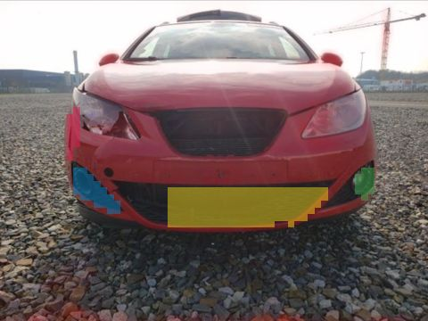

Condición (solo para el revisor): C4 · etiqueta controlada: SUSPICIOUS

En esta descripción, no es correcto afirmar que el vehículo no presenta rayones. Esta descripción corresponde al daño observado.
SUPPORTED — SUPPORTED: 0.613 · SUSPICIOUS: 0.387 · INSUFFICIENT: 0.000
U = 0.668 (τU = 0.679) · c̄ = 0.625 (τc = 0.000)
| nodo | tipo | g | c,q,r,u |
|---|---|---|---|
| 0 | claim | 0.161 | [0.25, 1.0, 0.6803, 0.0543] |
| 1 | source | 0.754 | [1.0, 0.7539, 1.0, 0.0] |
| 2 | visual | 0.006 | [1.0, 0.5809, 0.4202, 0.9753] |
| 3 | visual | 0.013 | [1.0, 0.3224, 0.5441, 0.9238] |
| 4 | visual | 0.002 | [1.0, 0.0423, 0.5441, 0.8944] |
| 5 | visual | 0.035 | [1.0, 0.4003, 0.5441, 0.839] |
| 6 | forensic | 0.071 | [1.0, 0.7539, 0.3782, 0.7516] |
| origen | destino | relación | peso g·p |
|---|---|---|---|
| 0 | 2 | support | 0.006 |
| 0 | 3 | support | 0.013 |
| 0 | 4 | support | 0.002 |
| 0 | 5 | support | 0.033 |